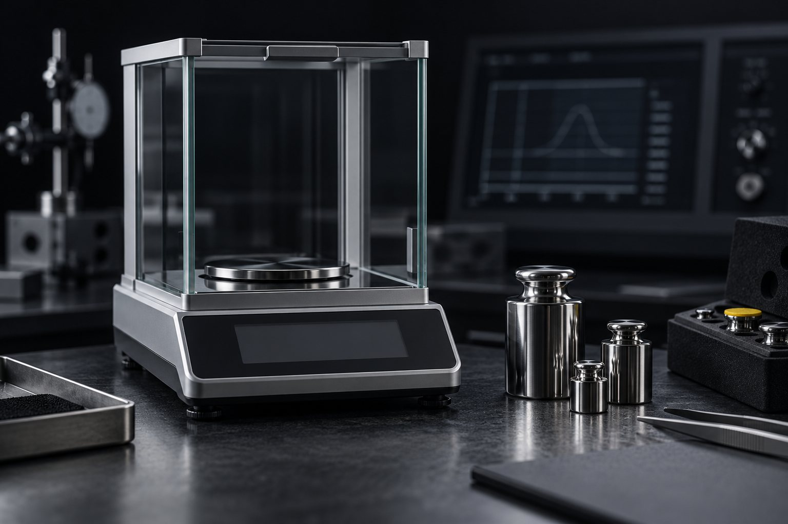

E16 · Calibrar o juiz falso
10 minRode o ensaio com o juiz falso.
Pronto quando: a última linha antes do código é JUIZ DESCALIBRADO em R1, R2: não use para aprovar e saída: 1.
Aula 6 · 22 min
Nem tudo vira teste: "a mensagem explica o porquê?" pede leitura. Um modelo pode julgar isso, desde que a rubrica seja sim/não, o julgamento se repita e o juiz tenha sido comparado com rótulos seus antes de valer. Nesta aula você calibra um juiz falso (que falha), depois um real, e vê a calibração achar uma rubrica ambígua.
Começar a aula
Objetivo: escrever rubrica sim/não, rodar um juiz com repetições e só usá-lo depois de calibrado contra rótulos humanos.
Clique em cada etapa.
Vieses conhecidos do juiz por modelo: prefere a resposta mais longa, a posição de uma das opções numa comparação, e o estilo do próprio modelo.
Mensagens de commit escritas por um agente. 10 mensagens em kit/juiz/artefatos.jsonl, com os rótulos de uma pessoa em humano.csv.
# Rubrica — mensagem de commit escrita pelo agente Critérios sim/não. Nunca nota de 1 a 10. (invariável) = um "nao" reprova a mensagem, independente do resto. O que dá para checar por código (tamanho da 1ª linha, formato) NÃO entra aqui: vai para um teste. R1 | A mensagem diz POR QUE a mudança foi feita, não só o que mudou? | qualidade R2 | Toda MUDANÇA que a mensagem cita está no diff (não inventa arquivo, teste nem efeito)? O motivo pode vir de fora do diff. | invariável R3 | Quem não viu o diff entende o que mudou só pela mensagem? | qualidade
J=~/projetos/loop-r-eng-verificacao-v72/kit/juiz python3 $J/juiz.py --rep 3 --saida /tmp/juiz-falso.csv python3 $J/calibrar.py $J/humano.csv /tmp/juiz-falso.csv; echo "saída: $?"
a01 R1=sim R2=sim R3=sim a02 R1=nao R2=sim R3=nao a03 R1=sim R2=sim R3=sim (… a04 a a10 …) → /tmp/juiz-falso.csv 10 artefatos rotulados pelos dois R1 concordância 80% kappa 0.55 REESCREVA ou troque o juiz (discorda em a03 a09) R2 concordância 70% kappa 0.00 REESCREVA ou troque o juiz (discorda em a03 a05 a09) R3 concordância 100% kappa 1.00 ok JUIZ DESCALIBRADO em R1, R2: não use para aprovar saída: 1
O juiz falso diz "sim" em R2 para tudo: nunca confere o diff. A calibração pegou. Repare em R1: 80% de concordância parece aprovar, mas o kappa (0,55) mostra que boa parte é acaso.
Se quase tudo é "sim", um juiz que responde "sim" sempre já concorda muito com você. O kappa de Cohen desconta essa concordância esperada por acaso: 1 é perfeito, 0 é igual a chutar. A FEC pede 0,6 com 30 amostras rotuladas; o LOOP-R pede 80% de concordância. O calibrar.py cobra os dois.
Sai da sua cota: 30 chamadas (10 mensagens × 3). Em 19/10/2026 isto rodou duas vezes; a primeira mostrou um defeito da rubrica, não do juiz.
JUIZ_CMD='claude -p --tools ""' python3 $J/juiz.py --rep 3 --saida /tmp/juiz-real.csv python3 $J/calibrar.py $J/humano.csv /tmp/juiz-real.csv; echo "saída: $?"
a01 R1=sim R2=sim R3=sim a02 R1=nao R2=sim R3=nao a03 R1=nao R2=nao R3=sim instável: R1 2×1, R3 2×1 REPROVA (R2 invariável) a04 R1=sim R2=sim R3=sim a05 R1=sim R2=sim R3=sim (… a06 a a08 …) a09 R1=nao R2=nao R3=sim instável: R1 2×1 REPROVA (R2 invariável) a10 R1=sim R2=sim R3=sim → /tmp/juiz-real.csv 10 artefatos rotulados pelos dois R1 concordância 100% kappa 1.00 ok R2 concordância 90% kappa 0.74 ok (discorda em a05) R3 concordância 100% kappa 1.00 ok JUIZ CALIBRADO saída: 0
Claude Code 2.1.303, modelo padrão da assinatura, 3 min 12 s. Divergência que sobrou: a05 diz que aumentar a sessão "melhora a segurança"; a pessoa marcou como efeito inventado, o juiz aceitou.
Na primeira rodada real, o R2 dizia "Tudo o que a mensagem afirma aparece no diff (nada inventado)?". O juiz reprovou mensagens boas, porque o MOTIVO de uma mudança nunca está no diff:
a01 R1=sim R2=nao R3=sim REPROVA (R2 invariável) a04 R1=sim R2=nao R3=sim REPROVA (R2 invariável)
O juiz estava certo pela letra; a rubrica é que estava ambígua. O critério foi reescrito ("toda MUDANÇA citada está no diff; o motivo pode vir de fora") e a segunda rodada calibrou. É para isso que a calibração serve: achar o critério ruim antes de ele decidir alguma coisa.
Na mesma primeira rodada, a assinatura bateu o limite de sessão a partir do 6º artefato. A versão antiga do juiz.py contou a resposta ausente como "nao" e reprovou tudo. A versão atual separa: imprime SEM RESPOSTA do juiz, deixa o artefato fora do CSV e termina com JUIZ FALHOU em N chamada(s) e código diferente de 0. Juiz que não respondeu não reprovou nem aprovou.
Juiz falso, juiz real e a rubrica do seu caso.
Rode o ensaio com o juiz falso.
Pronto quando: a última linha antes do código é JUIZ DESCALIBRADO em R1, R2: não use para aprovar e saída: 1.
Rode o bloco real com claude -p ou codex exec só leitura.
Pronto quando: calibrar.py imprime uma linha para cada um de R1, R2 e R3 e termina em JUIZ CALIBRADO (código 0) ou JUIZ DESCALIBRADO (código 1). Se descalibrou, diga qual critério você reescreveria.
Escolha um artefato subjetivo do seu agente (resumo, resposta, mensagem). Escreva 3 critérios sim/não, um invariável, e rotule você mesmo 10 artefatos em humano.csv. Rode o juiz real e calibre.
Pronto quando: python3 $J/calibrar.py humano.csv /tmp/juiz.csv → primeira linha 10 artefatos rotulados pelos dois; cada critério com ok ou reescrito até ficar ok.
Pergunta 1 de 4
Por que a rubrica é sim/não e não nota de 1 a 10?competência
Pergunta 2 de 4
R1 teve 80% de concordância e kappa 0,55. O juiz serve para R1?competência
Pergunta 3 de 4
Na 1ª rodada real, o juiz reprovou mensagens boas em R2. O que estava errado?
Pergunta 4 de 4
O juiz não respondeu (limite da assinatura). Como contar?
Escolha uma alternativa. A explicação aparece depois da sua tentativa.